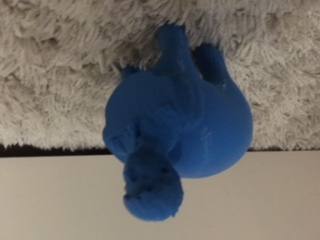

The MakerBot Replicator 5th Gen printer can print additive objects in a volume of approximately 1 cubic foot.
First off, I used MeshMixer to place my head on an elephant's body.

Then I created a little thimble thing that has tiny little holes in it to hold more water than you might think. Perfect for when you just want three drops of water to drink.
Finally, I made a speaker that you can put your phone into and amplify your music's volume. It's pretty small, though, so pay attention to what you're using it with.